研究方向
本研究室的工作沿著一條軸線展開：從特性描述到模式建構。先以室內試驗與現地量測掌握岩石與岩體的真實行為，再把觀察轉換成可計算的模式，最後以數值模擬回答工程與防災的問題。
岩石為天然產物，力學行為迥異於一般常見人造材料。從微觀角度出發，岩石材料的晶粒排列影響了受力後的裂紋發展；自巨觀角度審視，岩體的節理面分布對其穩定性及工程行為有重大影響。因此，探討岩石的力學行為，為本研究室的核心目標。
CharacterizationModelling
岩石試驗
岩石與其他材料最大的差異，在於它常處於高圍壓環境，而高圍壓下的力學行為與低圍壓截然不同 —— 除了強度明顯提升，岩石也會從脆性轉為延性。因此三軸試驗系統是岩石力學最核心的設備。本研究室以美國 GCTS 公司之 RTX-1000 進行單軸壓縮、三軸壓縮與間接張力（巴西）試驗，最大載重 1000 kN、最大圍壓 70 MPa。
除了求得強度與變形性，我們也由多組圍壓下的試驗結果建立破壞準則，作為後續數值模式的輸入依據。
近年加入音射訊號（Acoustic Emission）量測：在加載過程中記錄岩石內部微裂隙萌生與擴展所釋放的彈性波，藉此追蹤破壞的發展歷程，而不只是取得破壞當下的單一強度值。另針對臺灣常見的軟弱岩石，以針貫入試驗建立簡易的強度評估方法。
 三軸壓縮試體
三軸壓縮試體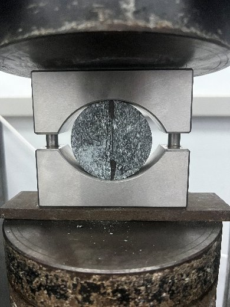
巴西試驗（間接張力）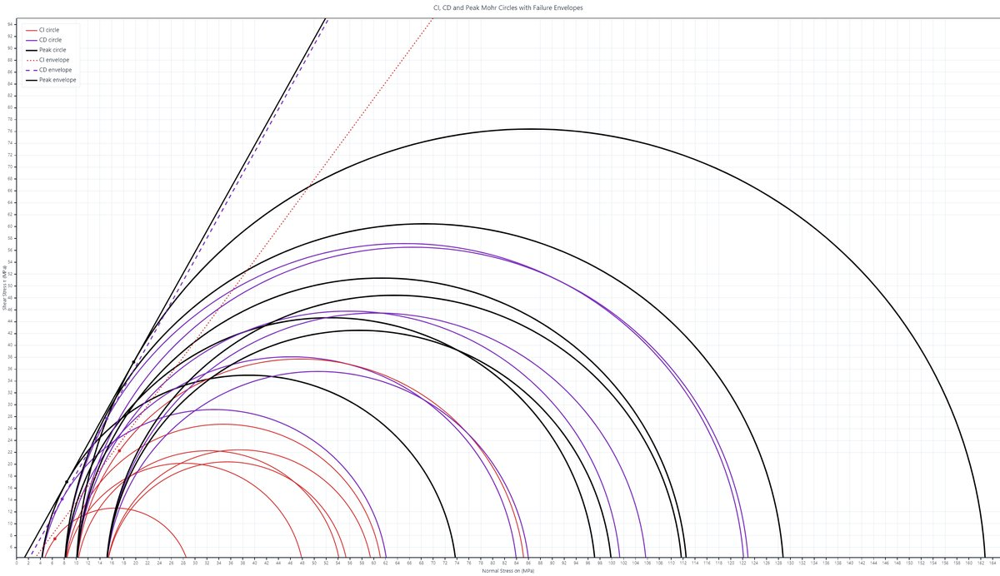
由多組圍壓建立破壞準則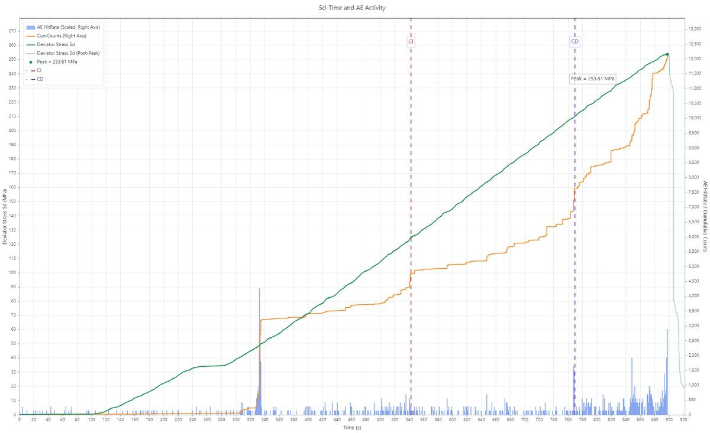
音射訊號與載重歷時點雲分析
現地調查是了解工址特性的第一步，也是傳統上最仰賴人工、最耗時、結果最主觀的一步。我們以攝影測量與光達建立露頭的三維點雲，再用演算法自動萃取節理位態、粗糙度與裂隙軌跡，把野外量測轉為量化且可重複的流程。
目前的工作包括露頭特性描述（節理組數、位態分布、JRC 粗糙度統計）、裂隙萃取與離散裂隙網絡（DFN）建置，以及半自動化的岩體評分程式 —— 讓 Q-system 這類原本需要工程師逐項判釋的評分，能由點雲資料直接推算。
我們同時蒐集全臺不同區域的工程地質資料，彙整岩石材料與節理面的力學性質並建置資料庫，作為設計及施工單位初步的參考依據。
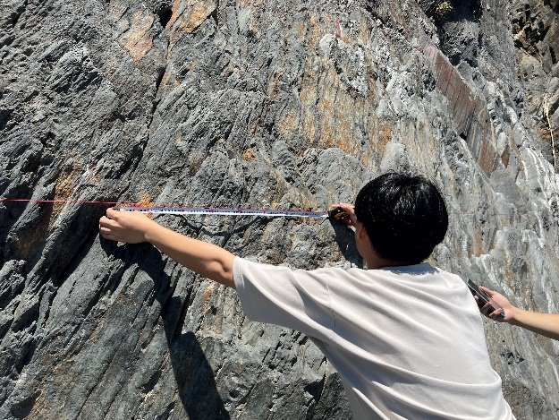
現地節理量測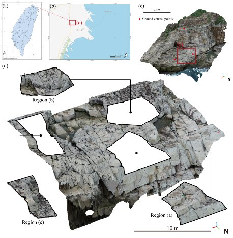
攝影測量建立露頭模型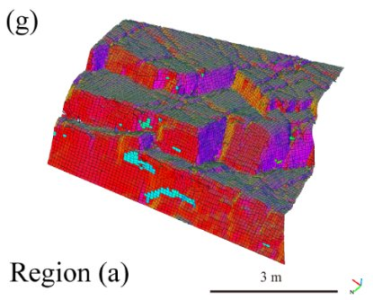
點雲自動分群 裂隙萃取與離散裂隙網絡
裂隙萃取與離散裂隙網絡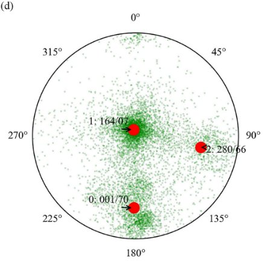
節理位態分布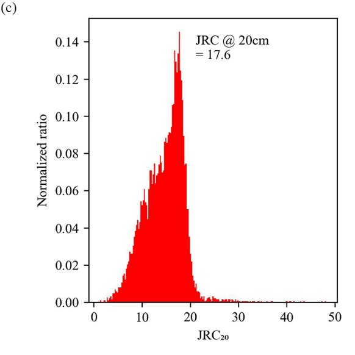
JRC 粗糙度統計消費級光達監測
高階光達昂貴且笨重，難以長期布設。我們探討消費級光達（例如行動裝置內建的 LiDAR）用於位移監測的可行性：先以室內試驗建立其誤差特性與可偵測的最小位移量，再透過長期現地監測驗證，並分析溫度、降雨等環境因素對量測結果的影響。
若可行，這將大幅降低邊坡與擋土結構長期監測的門檻。
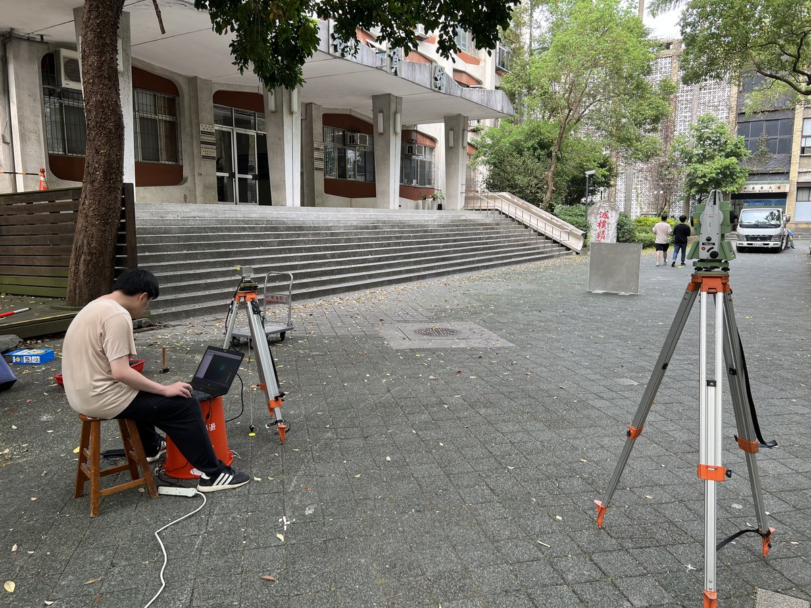
現地架設與掃描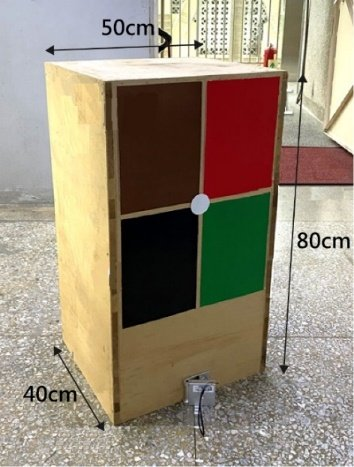
室內位移驗證試驗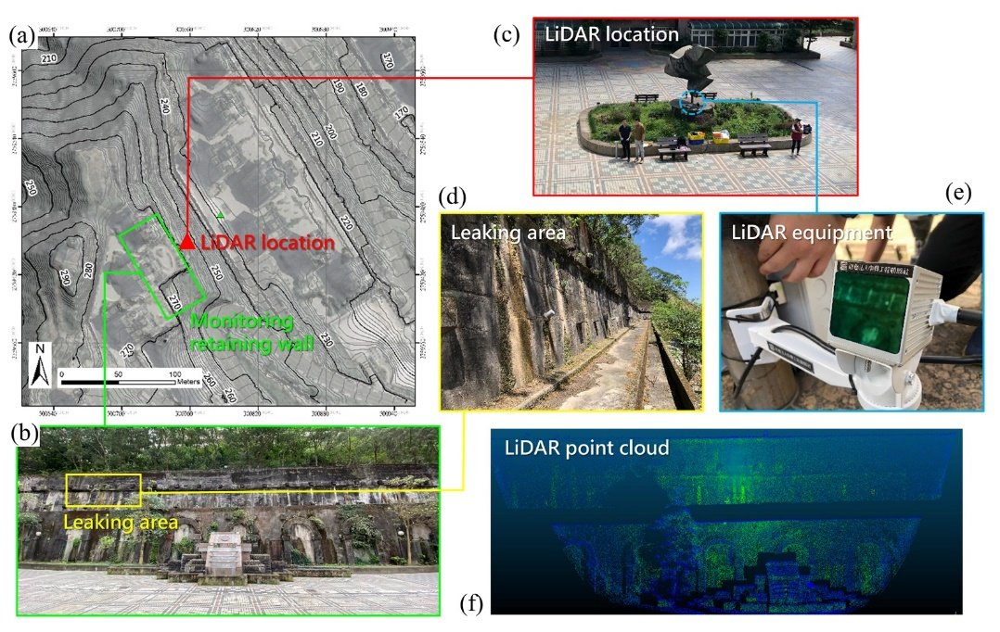
擋土牆長期監測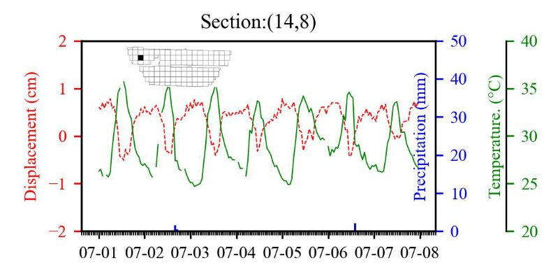
位移與溫度、降雨的關聯模式開發
離散元素法（Discrete Element Method, DEM）最初由 Cundall 於 1971 年提出，透過力－位移關係計算元素的運動行為，藉由顆粒間的交互作用重現材料的巨觀反應。它的應用範圍極廣，透過鍵結設定與否，兼具模擬連續塊體與離散塊體的能力。
然而通用的 DEM 接觸模式往往無法反映岩石的真實行為。本研究室的工作，是把試驗與現地觀察轉換成 DEM 中可計算的接觸模式 —— 這也是我們最主要的學術貢獻所在。
顆粒界面模式 PIM
「界面」泛指任何固體間的接觸面，不僅限於節理或劈理等地質弱面。在岩體工程中，界面的力學性質主控了岩體的穩定性。然而 DEM 中最先進的平滑節理模式，因未考慮顆粒受剪時的幾何排列與參數關係，無法提供準確的界面力學行為。
我們考慮顆粒群受剪時的接觸與分離特性，納入多項修正計算，並將工程界最常使用的 Mohr-Coulomb 與 Barton-Bandis 破壞準則納入模式，開發出顆粒界面模式（Particulate Interface Model, PIM）。其輸入參數可直接採用實驗室試驗資料，無須反算或修改，同時解決了模擬結果隨顆粒尺寸改變的問題。
 顆粒界面模式的計算流程
顆粒界面模式的計算流程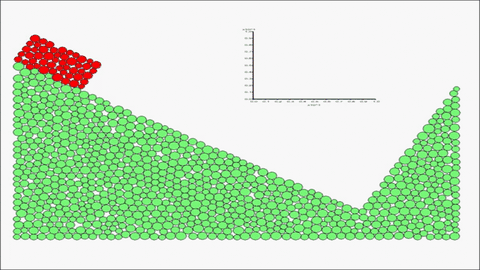
考慮速度相依摩擦的平面滑動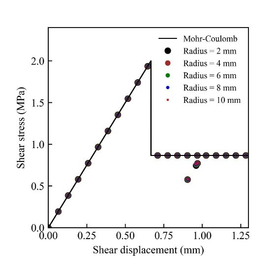
不同顆粒尺寸下結果一致滲流模式
岩體中的水是許多工程災害的推手。我們在 DEM 中建立裂隙滲流的分析模式，由顆粒間的孔隙構成流動路徑，並延伸至三維，用以探討節理岩體的水文地質行為與水力－力學耦合問題。
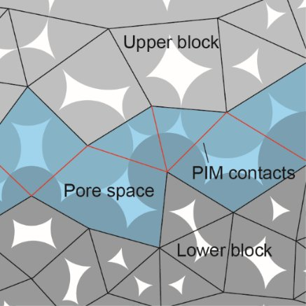
孔隙與界面接觸的組成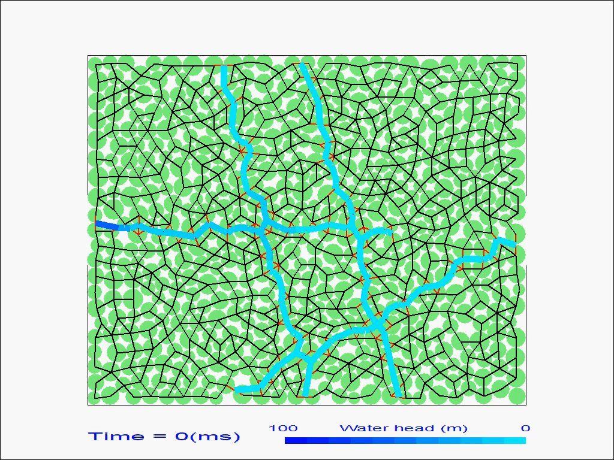
二維裂隙滲流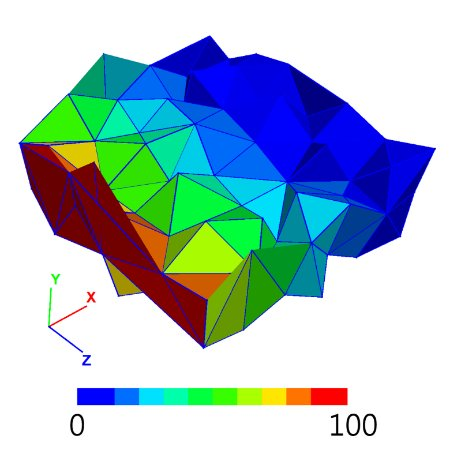
三維滲流水頭分布雙凹鍵結模式
不同於土壤，岩石具有相當高的凝聚力，晶粒間的膠結性質是影響其力學行為的關鍵。在觀察岩材薄片時我們發現，晶粒間的膠結形狀近似雙凹形，據此發展出雙凹鍵結模式（Biconcave Bond Model）並建立對應的 DEM 接觸演算法。
以此模式模擬幾何與組構已知的試體時，所需的微觀參數較接近實驗室量測值，顯示由微觀參數預測巨觀行為時表現更佳。
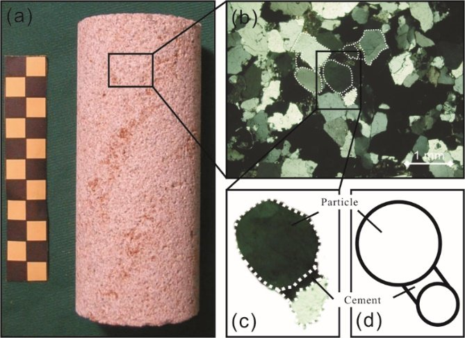
岩材薄片中的晶粒與膠結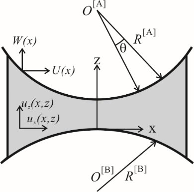
雙凹形膠結幾何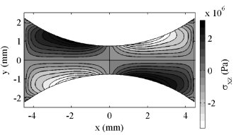
膠結內應力分布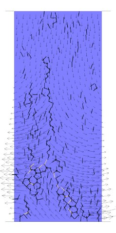
模擬的裂紋發展卵礫石層數值分析模式
臺灣西部麓山帶廣泛分布卵礫石層。它既不是土壤也不是完整岩體：由粒徑差異極大的塊石與細粒基質組成，力學行為由塊石的幾何形狀與排列主導。以圓形顆粒近似的通用數值模式無法反映塊石之間真實的互制與互鎖。
我們將實際塊石掃描重建為保留幾何特徵的數值模型，用於模擬三軸試驗與現地直接剪力試驗，探討塊石含量、形狀與排列對整體強度的影響。
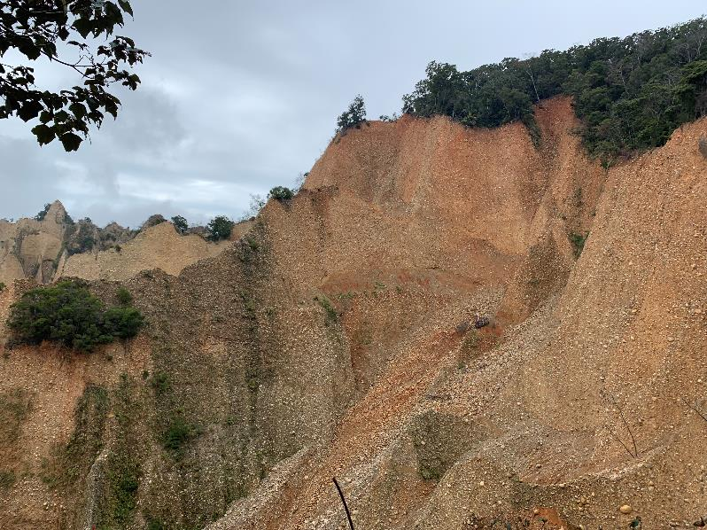
卵礫石層露頭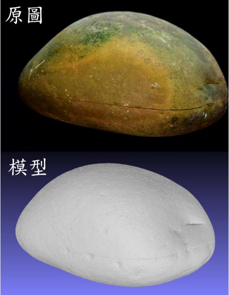
塊石原貌與重建的數值模型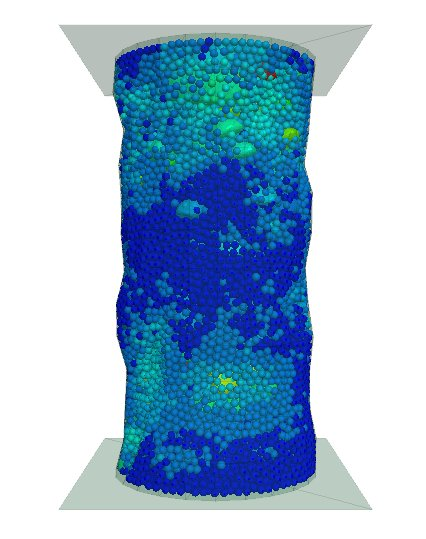
考慮塊石幾何的試體模擬節理岩體模擬
我們常假設工程周遭的岩石是均質均向的堅固基盤。這對完整岩塊或高度破碎的岩體是合適的，但當岩體含有一組以上的節理面時，其強度與變形性會隨方向而異，力學行為十分複雜。節理岩體因此是岩體工程最主要的挑戰之一。
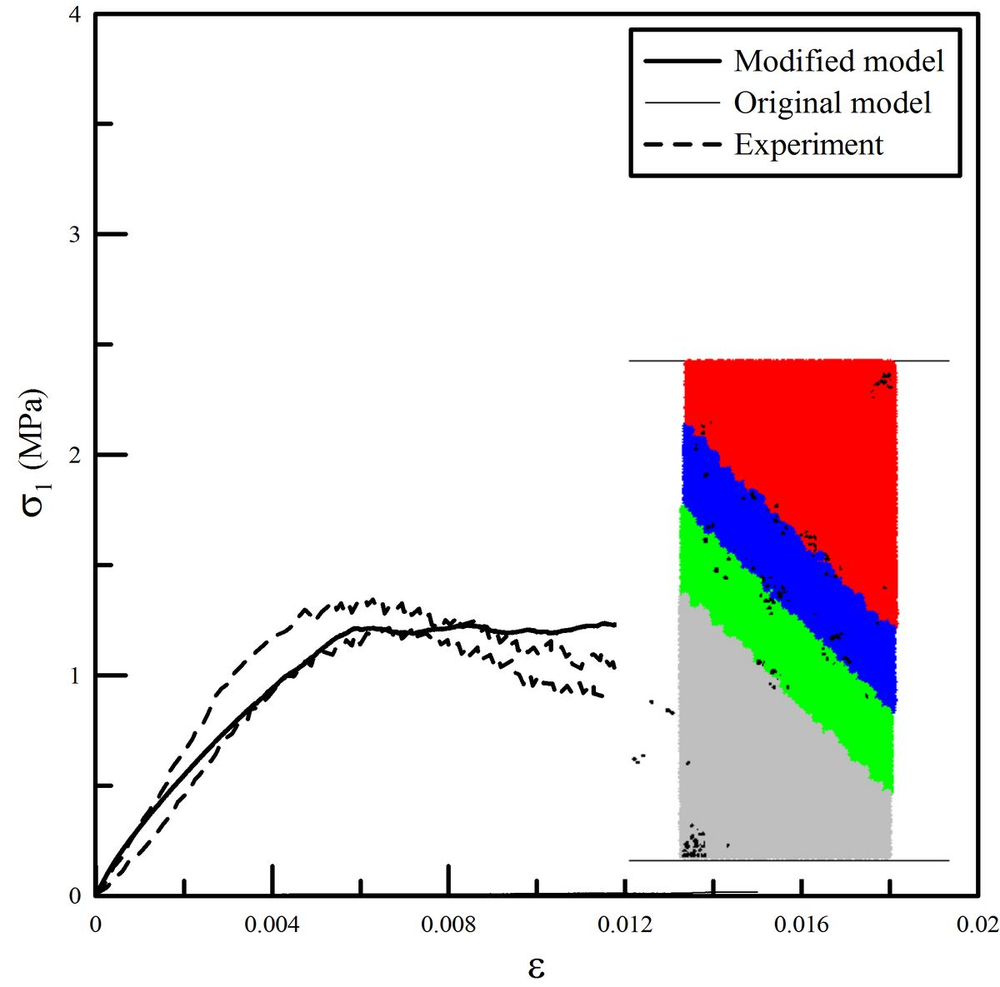
節理岩體試體 受壓後的裂紋發展
受壓後的裂紋發展數值模擬
最後一哩是把前面建立的模式用到真實案例上：重現災害發生的過程，並協助主管機關進行判斷與決策。
我們曾參與臺七線 49.8K 大曼崩塌的災害調查與分析，工作涵蓋落石模擬、土石流與橋梁互制的模擬，以及崩塌後的運移範圍推估。這類分析多為跨單位合作 —— 微地震技術由陽明交大提供，多尺度現地調查由臺大與中興工程協同執行，本研究室負責離散元素法的模擬部分。
隨著開發需求提升，工程設計越加複雜，傳統的力學計算已無法滿足實務所需。數值分析不僅能透過模擬探討設計安全性，也能在災害發生後快速還原過程、掌握可能的風險。
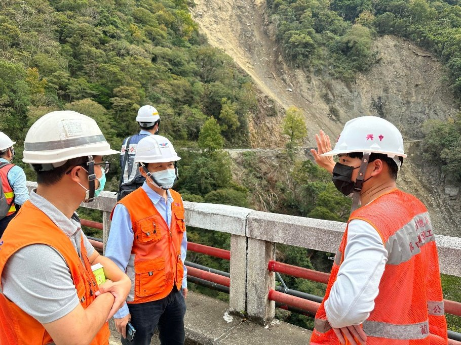
臺七線 49.8K 災害勘查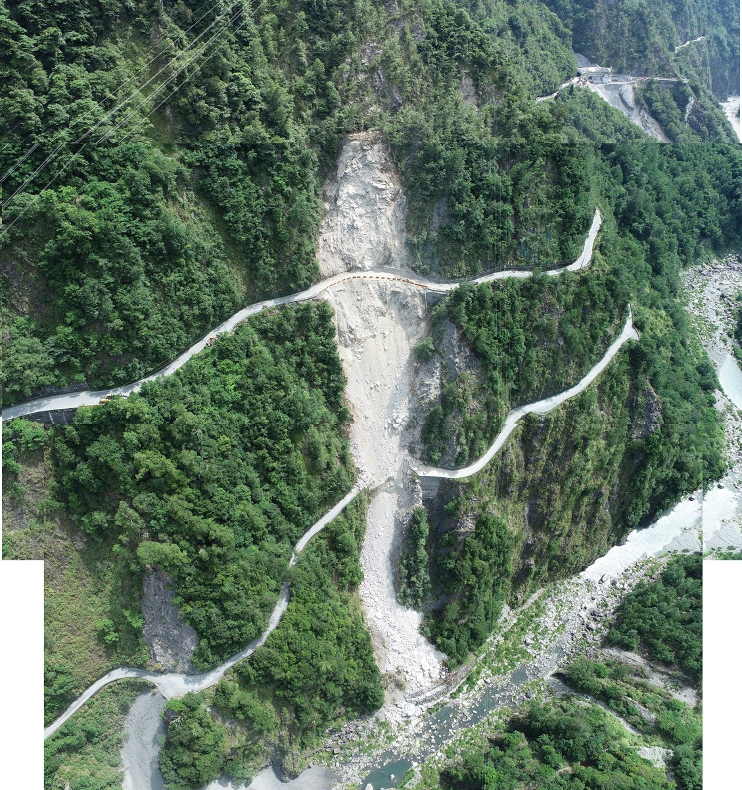
空拍崩塌範圍 土石流與橋梁互制模擬
土石流與橋梁互制模擬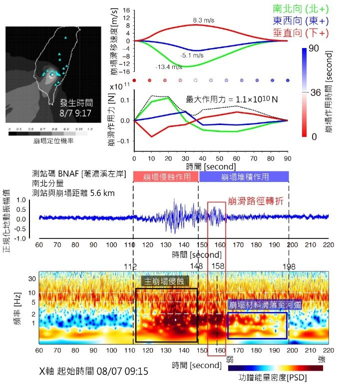
微地震訊號分析（陽明交大）隧道開挖損傷帶演化評估
隧道開挖後，周圍岩體會因應力重新分布而產生一圈受損的區域，稱為開挖損傷帶（Excavation Damaged Zone, EDZ）。這圈區域的範圍與滲透性變化，同時決定了隧道的長期穩定與地質處置設施的封閉性。
我們以離散元素法與連體分析追蹤各開挖階段的位移發展與損傷帶的形成範圍，並把時間尺度由施工期延伸到數萬年，評估損傷帶隨時間的演化。
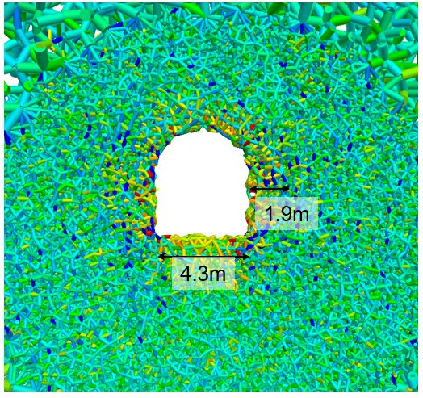
開挖後的損傷帶範圍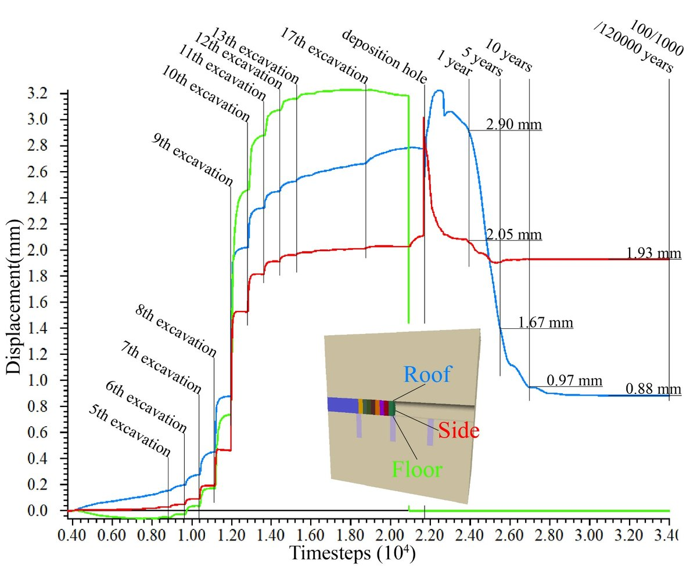
由開挖階段延伸至長期的位移發展應用領域
上述工作最終都指向大地與資源工程的實務。基礎開挖、邊坡穩定、大壩分析、隧道開挖、崩塌地調查治理 —— 每個領域都與人民的生活息息相關。所有的建設都要透過大地工程建立基礎：蓋台北一零一需先打設基樁，興建高鐵前要先治理邊坡與挖掘隧道。
對於大地與資源領域而言，臺灣非常值得發掘。小小一個島嶼擁有各式各樣的構造與岩性；石礦產業不論開採或加工，技術都相當進步；而年輕脆弱的地質條件加上高強度的降雨與地震，讓大地工程及防災的人才需求十分龐大。
 隧道工程現場
隧道工程現場